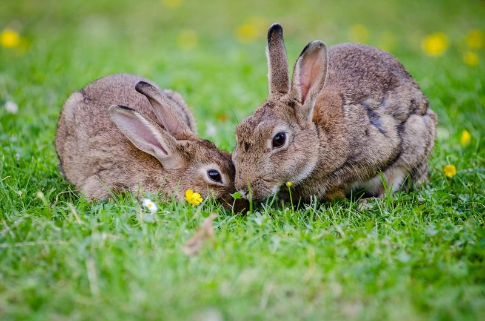
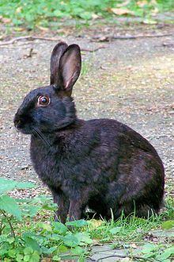
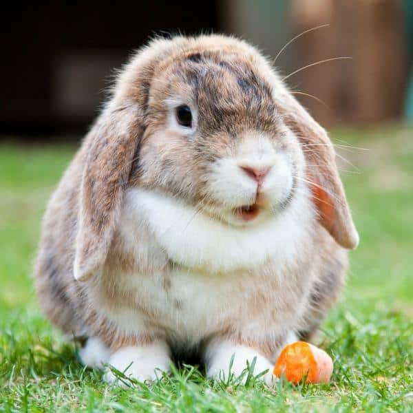

El conejo es una especie que existió desde la antigüedad; son animales muy prolíficos, las plagas de estos lagomorfos pueden causar grandes destrozos a la agricultura, por esa razón, para poder controlar la población, el hombre creó virus mortales para estos animales, tras su inoculación a parte de su población, tuvo un efecto demoledor, ya que los virus se expandieron por toda Europa y la población disminuyó alarmantemente, incluso en muchas áreas locales se extinguieron por completo.
Vive en áreas secas próximas al nivel del mar con un suelo arenoso y blando para facilitar la construcción de madrigueras. Habitan en bosques aunque prefieren campos extensos cubiertos por matorrales donde pueden esconderse. Antiguamente también eran frecuentes en tierras de cultivo aunque los nuevos métodos de arado incluyen la destrucción de madrigueras de conejos. A pesar de ello, esta especie se ha adaptado a la actividad humana viviendo en parques, campos de césped o incluso cementerios. En ocasiones se encuentran en cultivos agrícolas donde se alimentan de lechuga, granos o raíces cuyo fin era la ingesta humana.
El término orycto viene del griego ορυκτός (oriktós, «[ex]cavado, desenterrado») y éste de ορύσσειν (orýssein, «cavar»), haciendo referencia a las costumbres excavadoras características de esta especie en estado salvaje, mientras que el término griego λαγός (lagos) significa estrictamente «liebre».
Para descubrir el origen del nombre de la especie, así como de su nombre común, hay que remontarse hasta algunos siglos antes de Cristo. El conejo era un animal desconocido para los griegos y romanos de la Antigüedad que visitaron la península ibérica. El historiador griego Polibio (siglo II a. C.) lo describe por primera vez. Su nombre vernáculo, conejo, proviene del término íbero (o «prerromano», según el Diccionario de la lengua española) kýniklos (κύνικλoς), que después derivó al término latino cuniculus, y al español conejo
Se caracteriza por tener un cuerpo cubierto de un pelaje espeso y lanudo, de color pardo pálido a gris, cabeza ovalada y ojos grandes. Pesa entre 1,5 y 2,5 kg en estado salvaje. Tiene orejas largas de hasta 7 cm las cuales le ayudan a regular la temperatura del cuerpo y una cola muy corta. Sus patas anteriores son más cortas que las posteriores. Mide de 34 a 50 cm en condiciones afables, incluso más en razas domésticas para carne. Todas estas características que posee esta especie en estado salvaje pueden variar significativamente según la raza.
